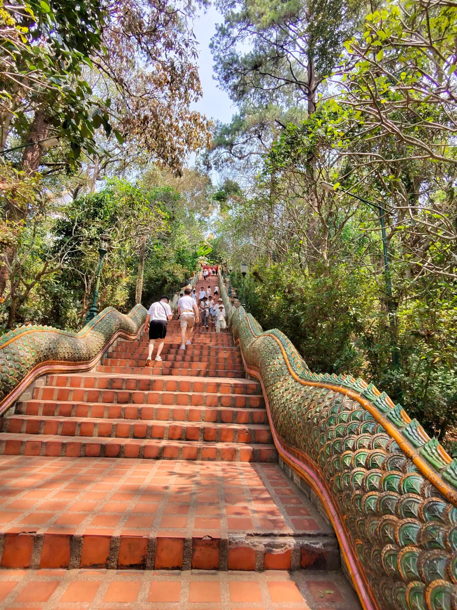
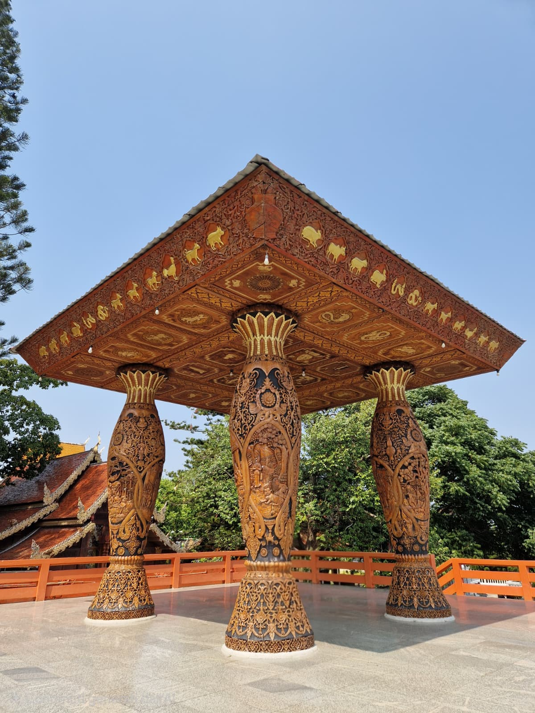
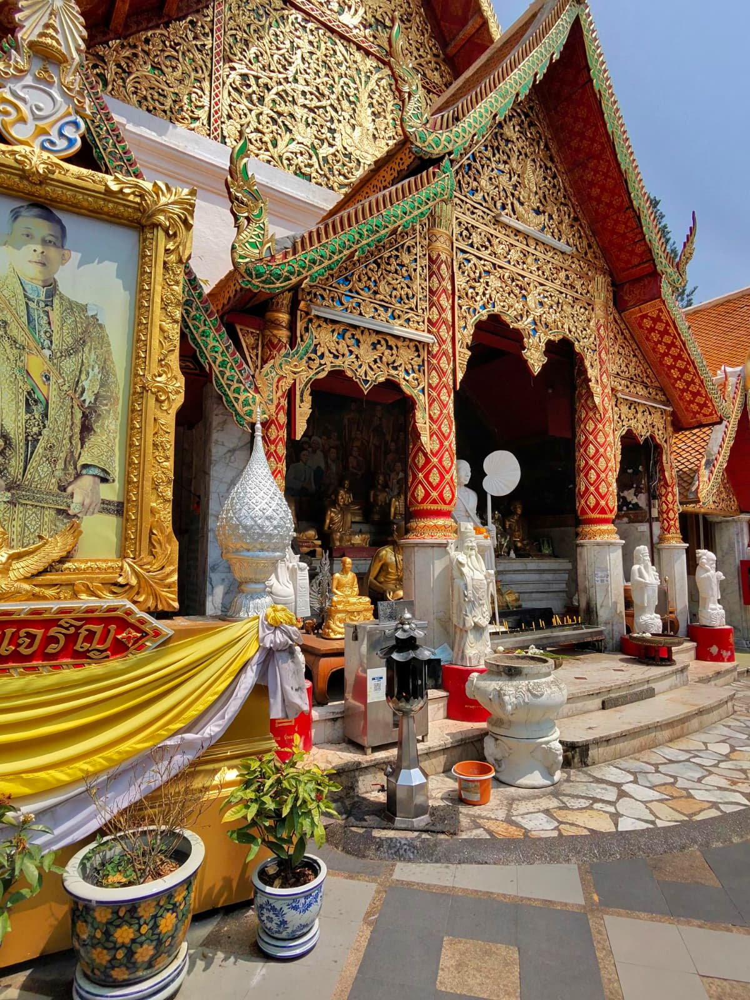
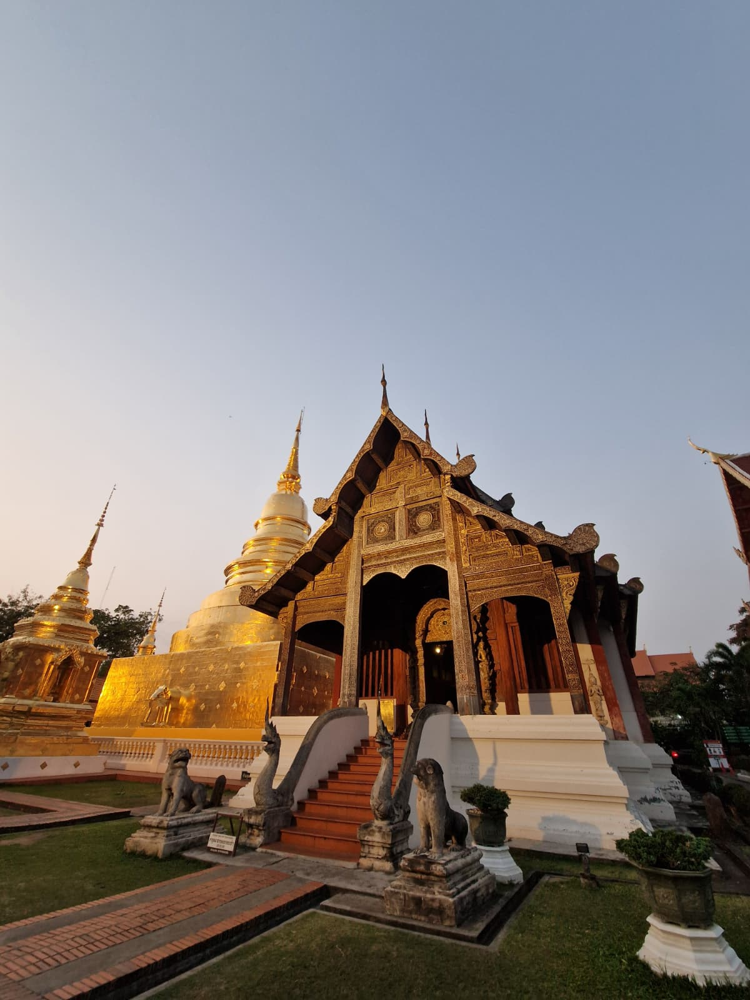
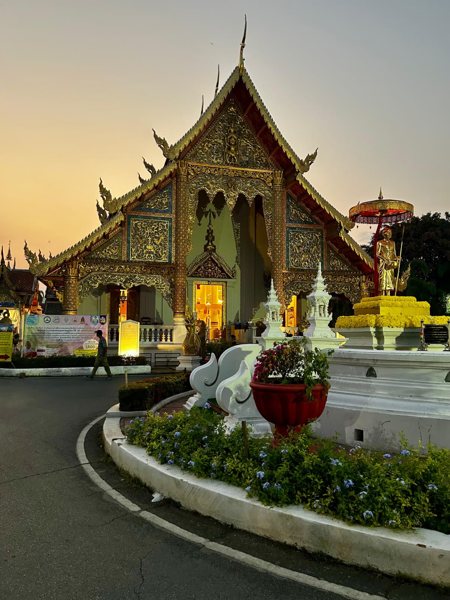
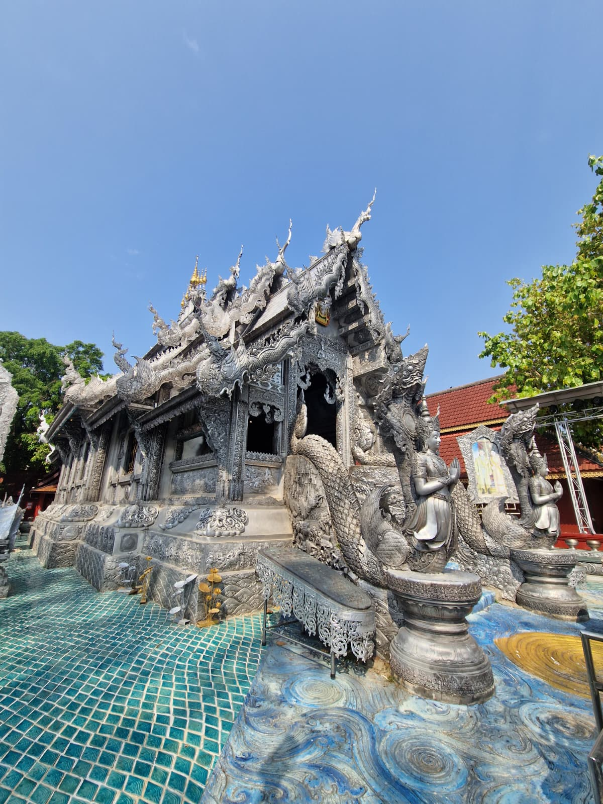
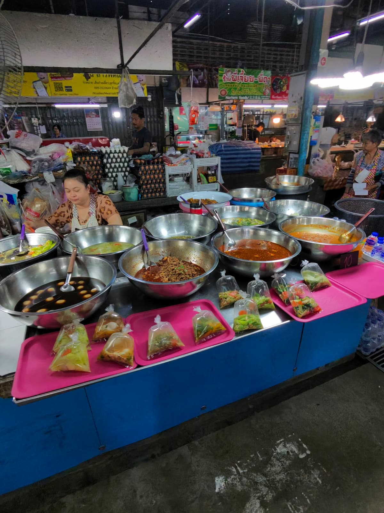
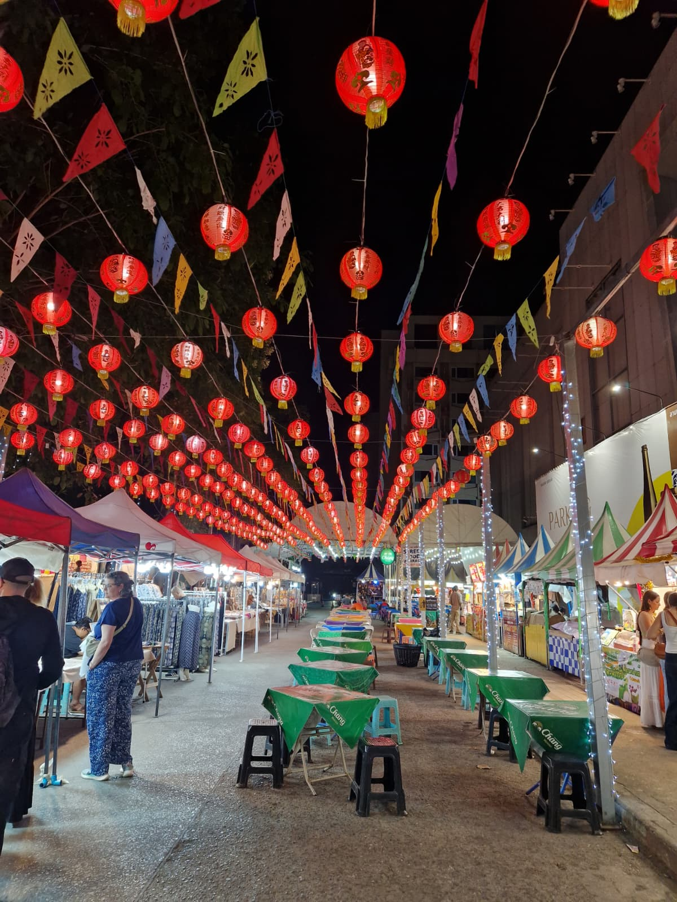

Chiang Mai: Girovagando spontaneamente tra la spiritualità del Nord
Se Bangkok ti travolge con il suo ritmo frenetico, Chiang Mai ti accoglie con un'energia completamente diversa. La capitale spirituale del nord della Thailandia è un luogo magico dove le mura della città vecchia racchiudono vicoli silenziosi, templi nascosti dietro l'angolo e mercati che si accendono di vita non appena tramonta il sole. Il modo migliore per viverla? Lasciare la mappa nello zaino e iniziare a girovagare a caso.
La scalata sacra verso il Wat Phra That Doi Suthep
La nostra avventura non poteva che iniziare da uno dei pilastri della cultura del Nord: il Wat Phra That Doi Suthep, un santuario abbarbicato sulla cima della montagna che domina l'intera vallata di Chiang Mai. Già l'arrivo è un'esperienza fisica ed estetica. Per raggiungere la terrazza sacra occorre affrontare una maestosa scalinata di oltre 300 gradini, protetta e accompagnata lungo i lati dai corpi sinuosi e colorati di due enormi serpenti mitologici Naga.

Una volta in cima, la fatica scompare. Il complesso stupisce per la ricchezza dei suoi dettagli intagliati nel legno profumato e per le strutture dorate che brillano sotto il sole del Nord. Camminando intorno al perimetro del tempio, si scoprono piccoli padiglioni d'altare finemente decorati che celebrano i segni dello zodiaco e la devozione reale, immersi in un'atmosfera di profondo rispetto e silenzio interrotto solo dal suono dei campanelli mossi dal vento.


I grandi must della città vecchia: Wat Phra Singh
Tornati nel cuore della città vecchia, ci siamo imbattuti nel celebre Wat Phra Singh, uno dei massimi esempi di architettura classica in stile Lanna. La luce calda del tardo pomeriggio ha dipinto d'oro la grande Chedi centrale e le facciate in legno scuro finemente lavorate. È un tempio imponente, dove guardare il sole scendere dietro le guglie dorate regala una sensazione di pace assoluta, ideale prima di tuffarsi nella vivace vita notturna.


L'incanto d'argento del Wat Sri Suphan
Girovagando senza una meta precisa fuori dalle vecchie mura, siamo rimasti letteralmente a bocca aperta davanti al Wat Sri Suphan, meglio conosciuto come il Tempio d'Argento. A differenza di tutti gli altri complessi dorati della città, questo tempio è interamente rivestito di argento, alluminio e nichel, lavorati a mano dagli artigiani del quartiere tradizionale dei argentieri. I riflessi metallici sotto il cielo limpido creano una texture quasi surreale e ipnotica.

La vita tra i mercati tradizionali e la magia della notte
Ma Chiang Mai non è solo silenzio e preghiera. Durante il giorno, infilarsi nei calderoni dei mercati locali ti permette di scoprire il vero volto della cucina del nord. Ci siamo persi tra i banchi di cibo, dove enormi ciotole d'acciaio traboccano di curry profumati, zuppe calde e prelibatezze avvolte in foglie di banana pronte da portare via nei tipici sacchetti di plastica.

Di sera l'attività si sposta verso i mercati notturni. In prossimità degli accessi e delle zone dedicate allo street food vengono appese file di luci e lanterne rosse tradizionali che creano un bell'ambiente per fermarsi a cena e fare due passi tra le bancarelle.
